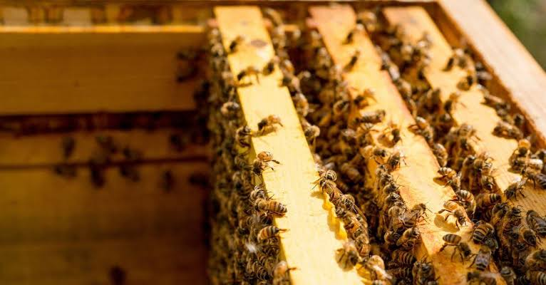
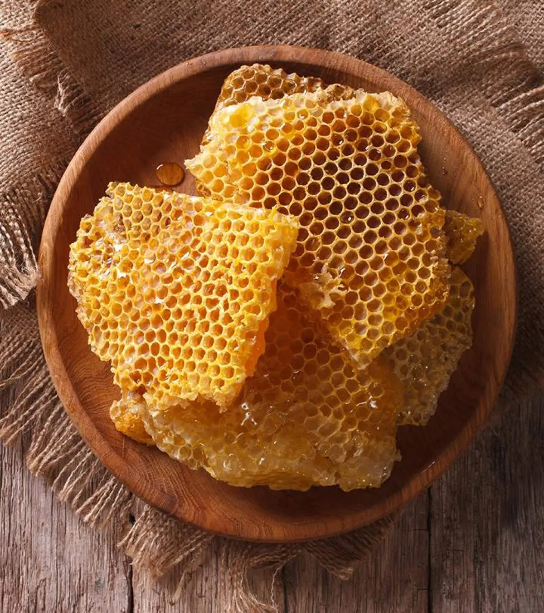
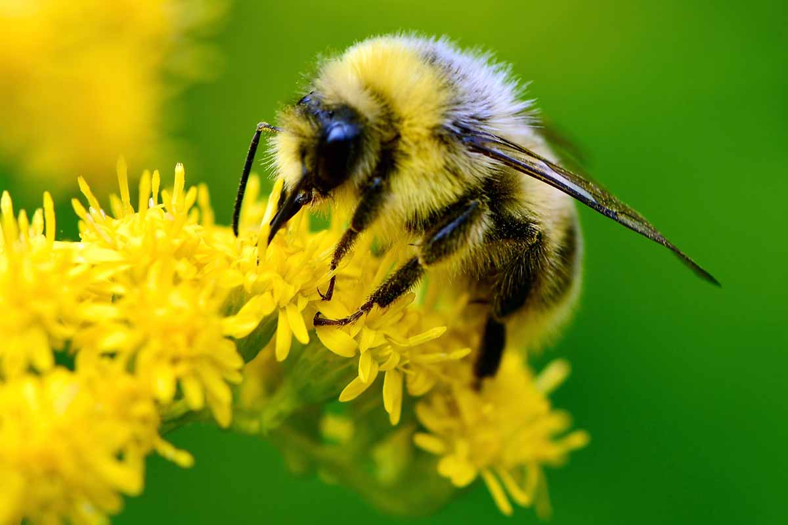

Farming
As humans, the products we farm from bees are mainly honey and beeswax, but we also rely on bees for most agricultural products. Beekeeping is the practice of keeping and caring for bees, usually in man-made hives.

Beekeepers keep bees mainly to collect honey and beeswax, but they also move hives to farms and orchards where the bees can pollinate crops. This helps farmers grow more food and produce better harvests.
- Honey is made by bees from the nectar they collect from flowers. The bees bring the
nectar back to the hive, where they process it and store it in honeycomb.
 Beekeepers can collect some of this honey without harming the colony, as
long as enough food is left for the bees.
Beekeepers can collect some of this honey without harming the colony, as
long as enough food is left for the bees. - Beeswax is another product that humans collect from beehives. Bees produce wax to build
the honeycomb where they store honey and raise their young. Humans use beeswax in
products such as candles, cosmetics, furniture polish and some foods.

- One of the most important things bees do for humans is pollination. When bees visit
flowers to collect nectar and pollen, pollen sticks to their bodies and is carried from
one flower to another. This allows many plants to reproduce and produce fruits and
seeds.

Farmers can place beehives near fields, orchards and other crops so that bees can pollinate the plants. In some places, beekeepers transport their hives between different farms depending on which crops are flowering. This means that beekeeping and farming are closely connected.
Bees are therefore farmed for more than just the products that come from their hives. Their role as pollinators is extremely important to agriculture, and farmers and beekeepers often depend on each other. By caring for healthy bee colonies, humans can produce honey and beeswax while also helping crops grow.